想拍但不想学
多数用户希望快速获得有氛围的旅行照片，但不愿理解复杂修图参数。玩法需要用“效果名称”和“示例结果”代替工具语言。
Effect names and previews replace technical editing controls.
2025 · AI travel photo · Scenario growth
AI旅拍是一个从小场景验证逐步走向全量入口的 AI 影像项目：先在 AI 导览中引入写真和一键出片玩法，再接入同程旅行主站 App 放量，最后与哈尔滨旅游专题结合，形成冰雪主题系列体验。
A staged AI photo product that evolved from an in-guide feature into a main-app traffic entry and destination campaign experience.
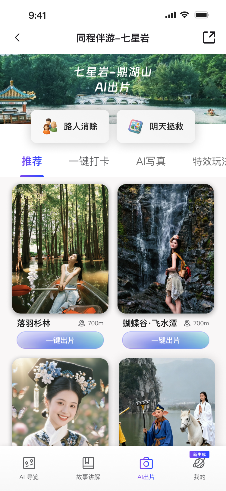
Design challenge
旅拍不是一个纯工具需求。用户在旅行中真正需要的是“我来到这里”的纪念感、“此刻可以发出去”的分享感，以及低成本得到好看结果的确定性。
Travel photo creation is driven by memory, social sharing, and low-effort output.
因此项目没有只做单一 AI 修图入口，而是围绕不同触发场景重组同一条核心链路：看见玩法、理解结果、上传照片、等待生成、保存/分享/再次生成。
The same generation logic was adapted to three traffic and scenario contexts.
User and scenario
多数用户希望快速获得有氛围的旅行照片，但不愿理解复杂修图参数。玩法需要用“效果名称”和“示例结果”代替工具语言。
Effect names and previews replace technical editing controls.
在景区导览和哈尔滨专题中，用户对“地点感”更敏感。设计需要把景点、主题、拍摄点和生成效果连接起来。
Destination context makes AI output more emotionally specific.
主站首页用户意图更分散，入口不能只讲功能，需要用更短路径呈现“修掉路人、拯救阴天、快速出片”的明确收益。
Main-app traffic needs clearer value and faster recognition.
Unified logic
Three stages
第一阶段依附 AI 导览场景，将旅拍作为景区游览中的附加玩法。入口以推荐、AI写真、一键打卡、特效玩法并列呈现，降低用户理解成本。
A guided pilot tested whether scenic users would try AI photo generation during the trip.
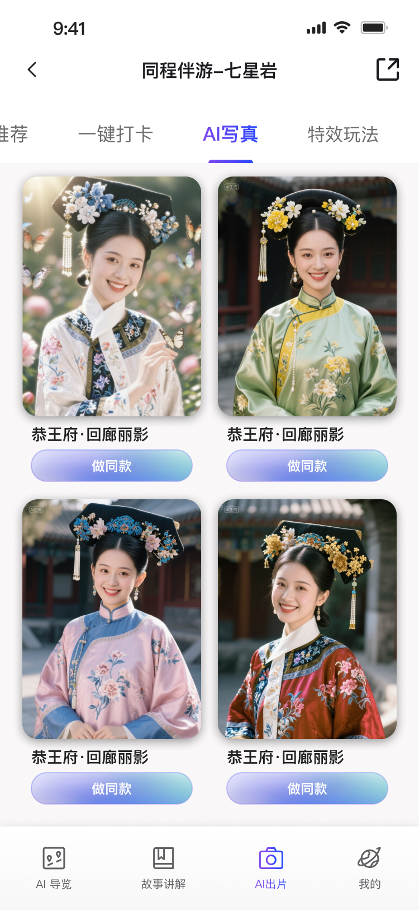
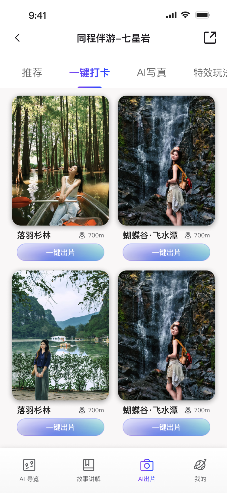
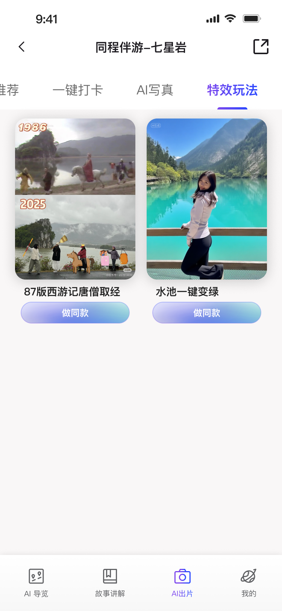
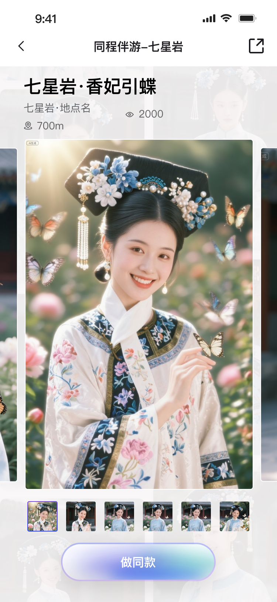
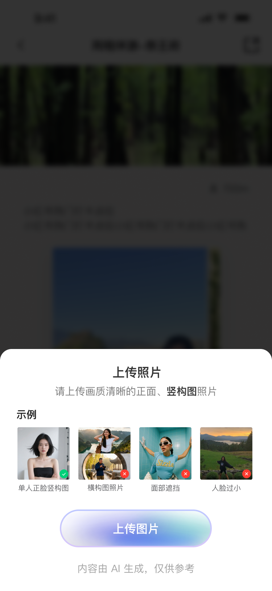
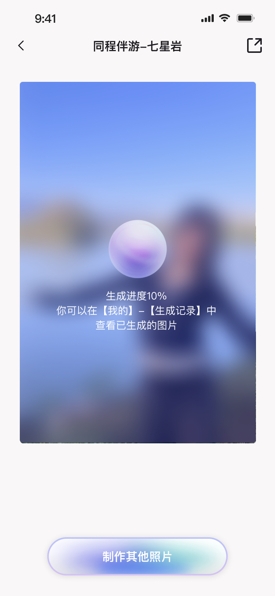
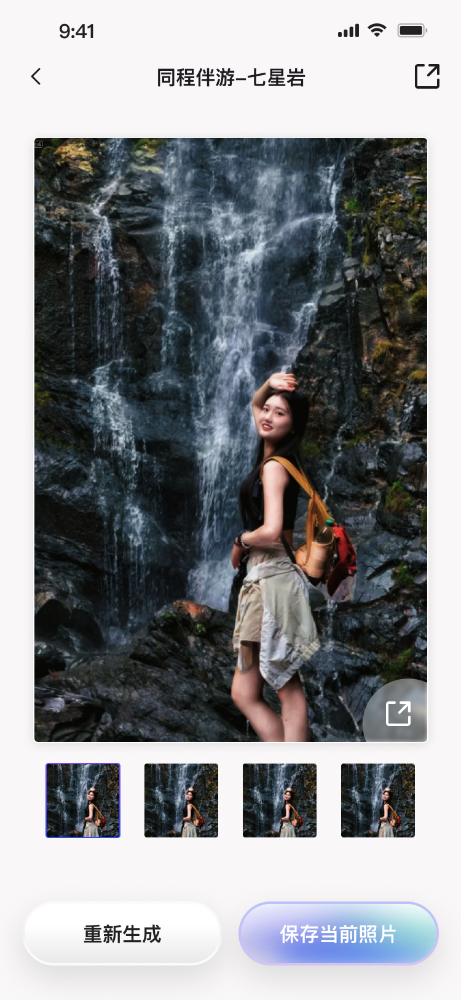
第二阶段接入主站首页和社区聚合页，入口不再强调“导览中的附加玩法”，而是强调 AI 工具对旅行照片的直接收益。上线后首页入口点击率约 0.5%，点击后使用率约 30%。
The main app stage reframed the feature as a high-recognition photo tool for broader traffic.
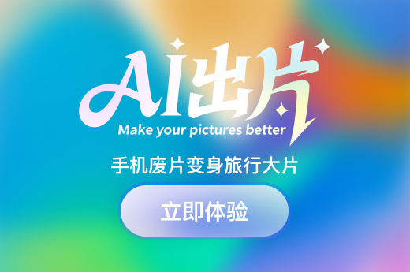
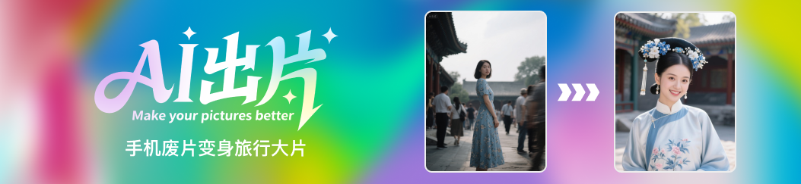
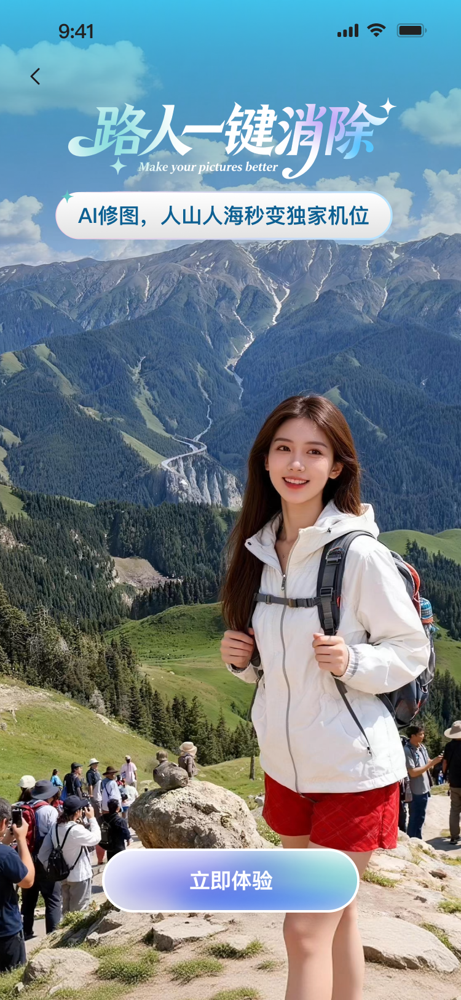
第三阶段与哈尔滨专题合作，围绕冰雪旅行建立更强的主题感。页面从出片点、AI修图、跟拍和上传入口组织，让用户先被目的地氛围吸引，再进入生成动作。
The Harbin campaign turned generic AI photo tools into a seasonal destination experience.
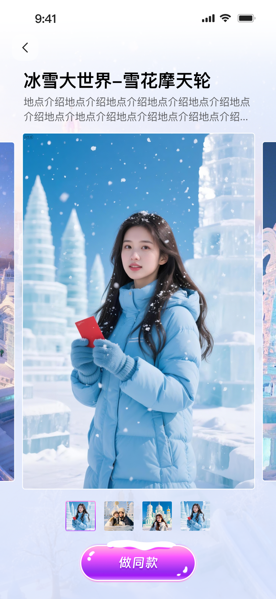
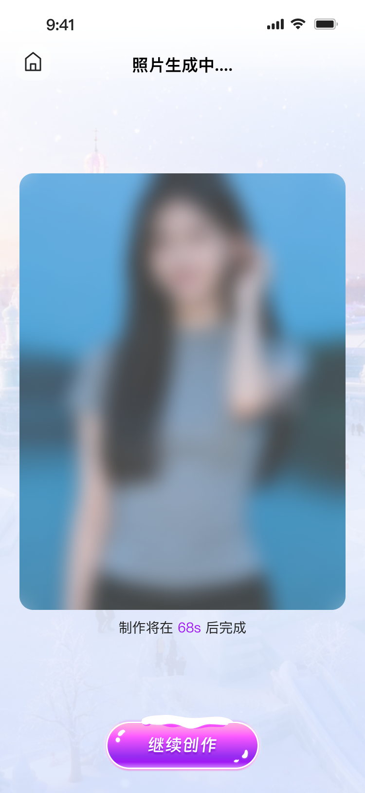
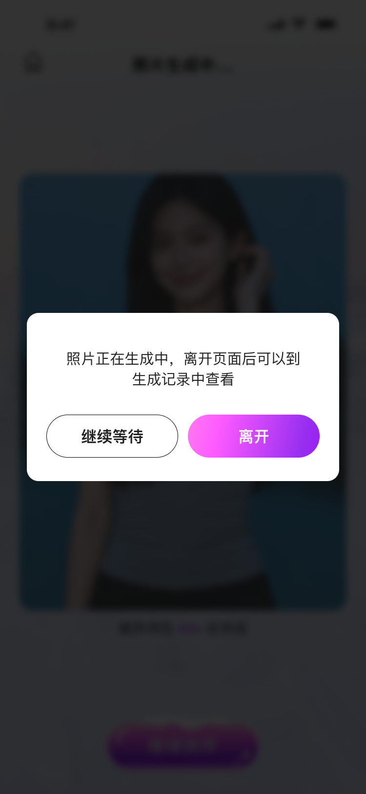
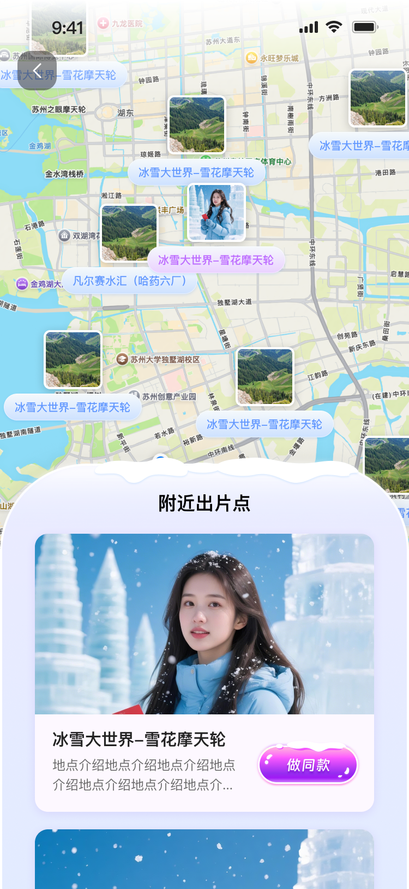
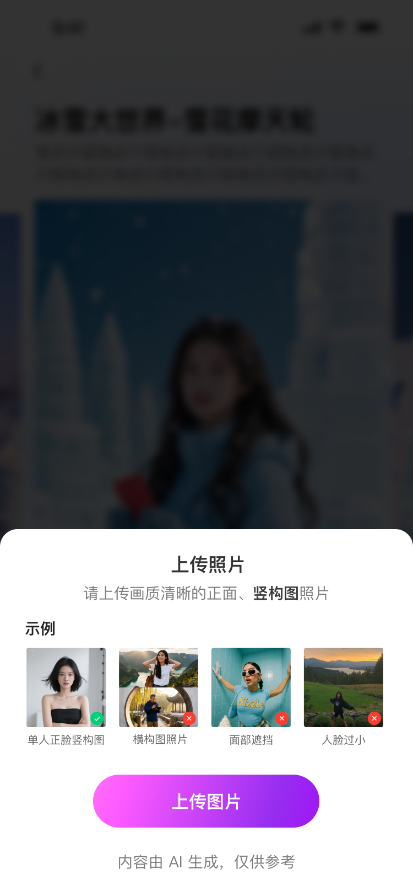
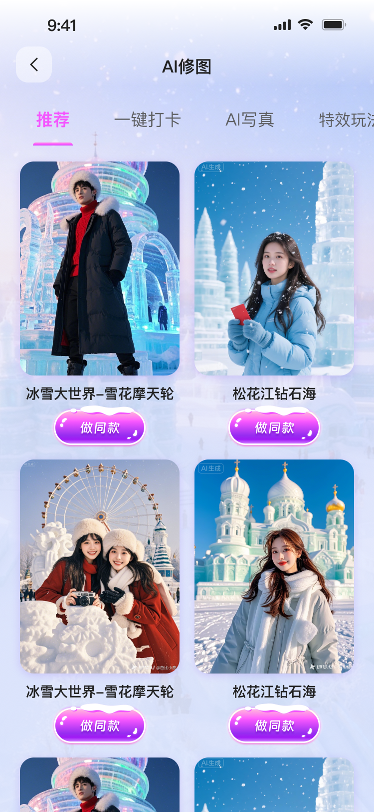
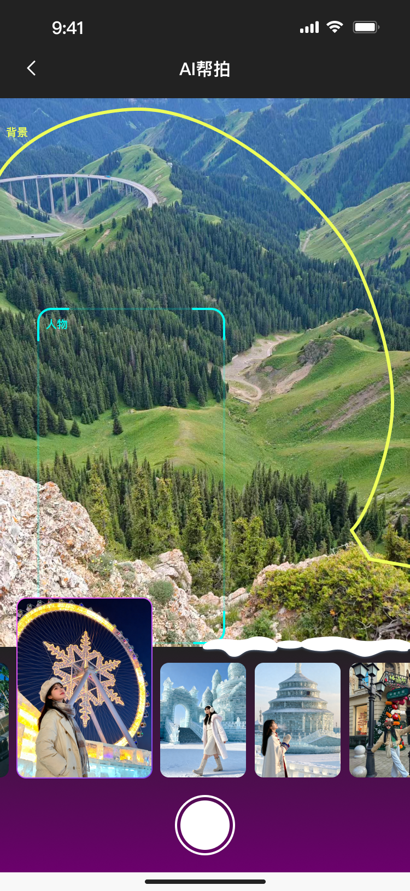
Interaction strategy
用户已经处在景区游览中，设计重点是“顺手试试”。入口需要轻、玩法要多、结果反馈要快，帮助团队验证兴趣和链路完整度。
In-guide entry prioritizes low-friction trial.
用户意图更分散，设计重点是“看懂收益”。首页入口和聚合页需要用直接的功能命名与效果示例提升点击动机。
Main-app entry prioritizes immediate value recognition.
用户被目的地内容吸引，设计重点是“进入情绪”。哈尔滨阶段用冰雪主题、出片点和跟拍服务，把 AI 生成包装成旅行体验的一部分。
Campaign entry prioritizes destination emotion and seasonal relevance.
Outcome
这个项目的核心价值不只是完成三套页面，而是把 AI 旅拍拆成可迁移的交互框架：入口理由、玩法选择、上传生成、结果沉淀。它可以在导览、主站、目的地专题中复用，又能根据场景替换表达方式。
The design outcome is a reusable interaction framework that can scale across product traffic, destination campaigns, and future AI photo tools.